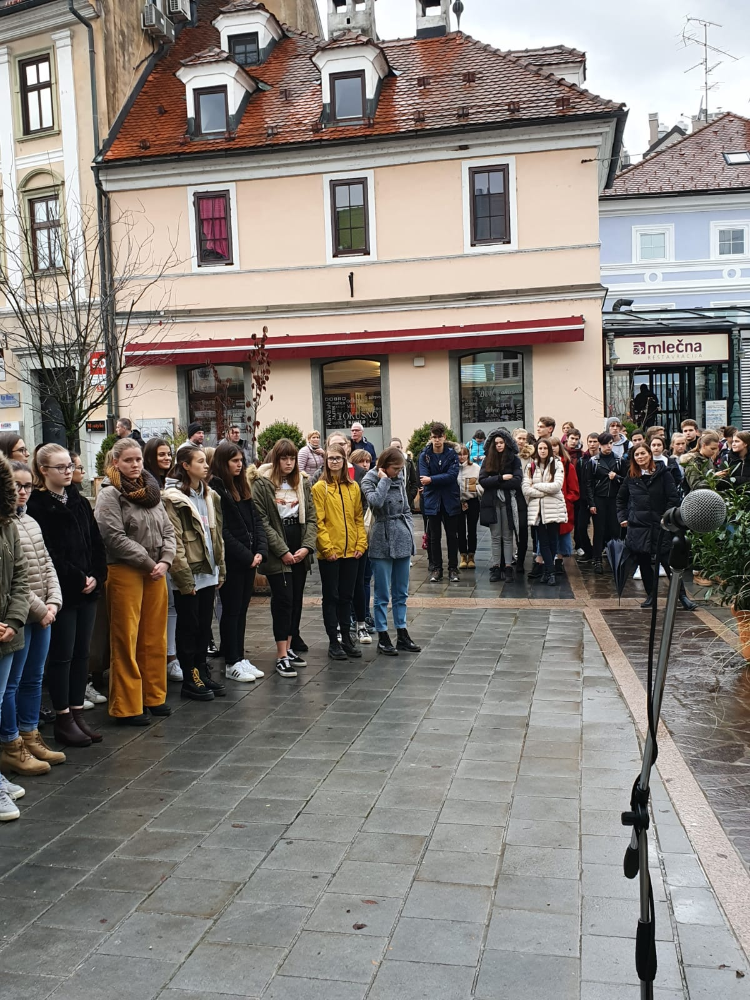
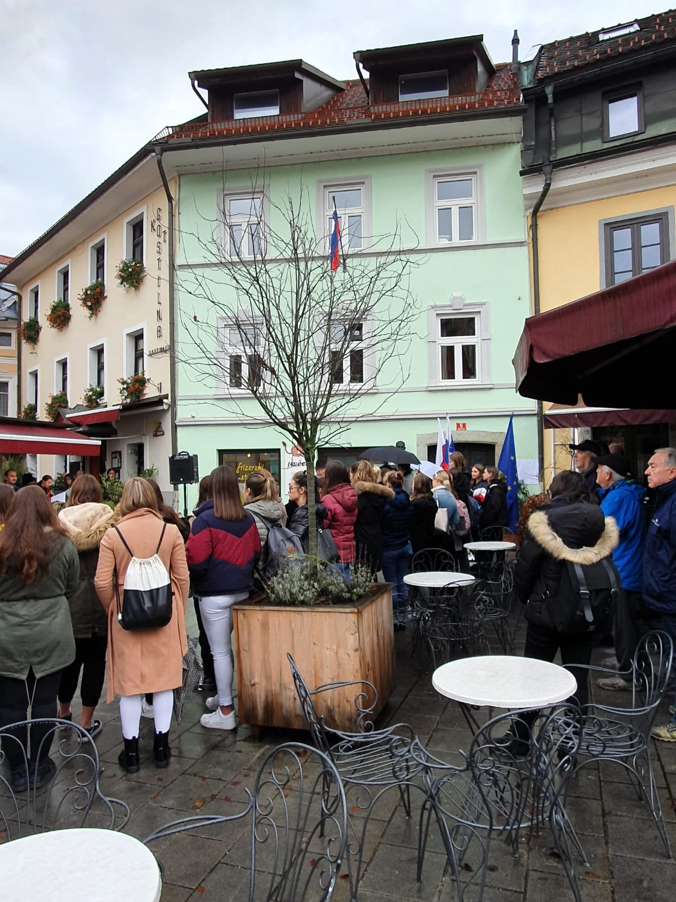
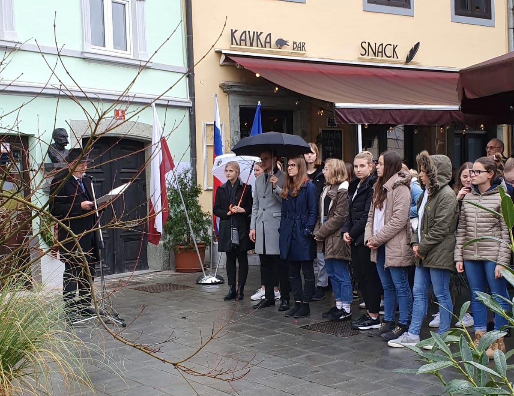
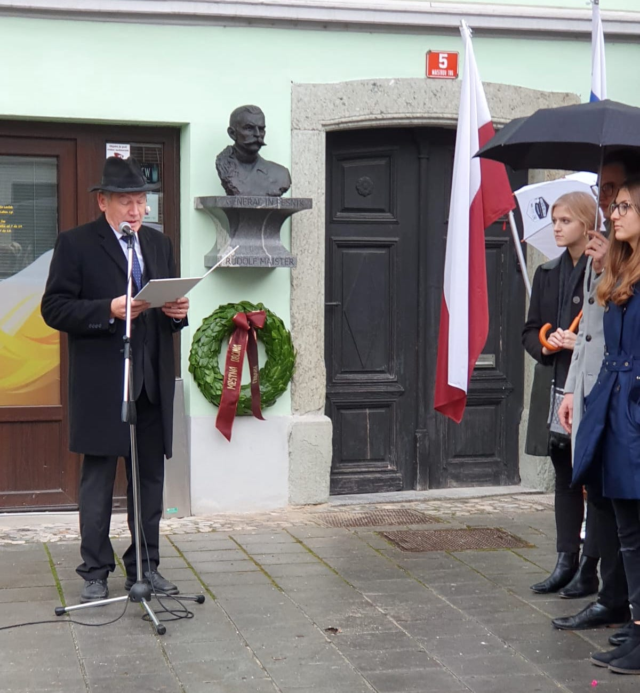
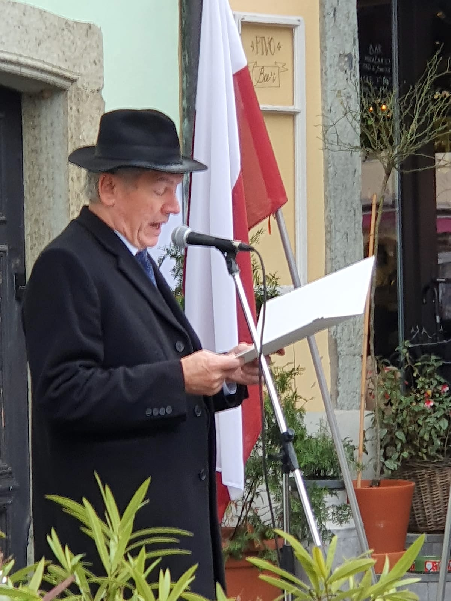
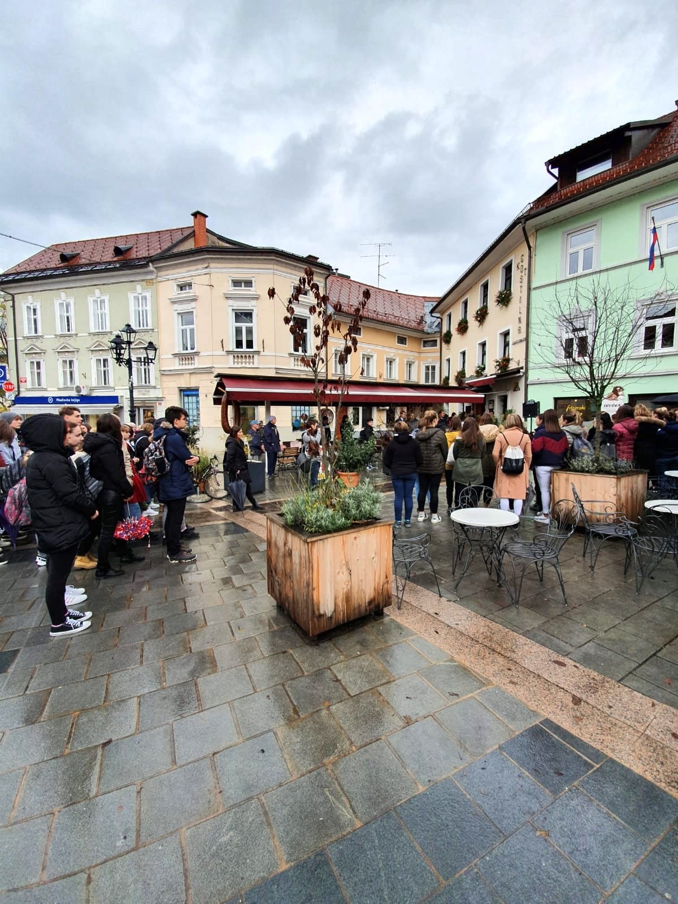

Proslava ob dnevu Rudolfa Maistra
Proslava ob dnevu Rudolfa Maistra 21. 11. 2019. Slavnostni govornik je bil mag. Franci Rozman, član društva in dolgoletni ravnatelj Gimnazije Kranj, čigar govor sledi v nadaljevanju.
Naš dijak Žan Gregorc je leta 2012 napisal seminarsko nalogo, ki je bila nagrajena in objavljena v Maistrovem glasu, reviji Zveze društev Rudolfa Maistra. Vsekakor sem za ta nagovor veliko črpal iz nje.
Rudolf Maister se je rodil 29. 3. 1874 v Kamniku. 1883 se je družina preselila v Kranj, kjer so stanovali v hiši, pred katero se vsako leto poklonimo spominu nanj. V Kranju je dokončal nižjo gimnazijo. Ker smo popolno gimnazijo dobili šele leta 1897 na mestu današnje Gimnazije, je šolanje nadaljeval v ljubljanski popolni gimnaziji, dokončal pa v kadetnici na Dunaju leta 1894 in začel vojaško kariero. Kot major se je oktobra leta 1918 uprl ukazom avstrijske vojske, od narodne vlade v Ljubljani zahteval čin generala in 23. 11. v hitri akciji razorožil Zeleno gardo avstrijske vojske, prevzel oblast v Mariboru in s tem v severni Sloveniji. Maistrov boj za severno mejo je bil vojaško uspešen, meje so pa postavili politiki. Rezultat plebiscita je bil za Slovence katastrofalen. Maistrova vojaška kariera je trajala do leta 1923, ko so ga oblasti kraljevine SHS upokojile kot divizijskega generala. Leta 1934 je umrl na Uncu blizu Rakeka.
Rudolf Maister je bil tudi umetnik. Naj vas spomnim samo, da je 4. razred nižje gimnazije današnji 8. oziroma 9. razred osnovne šole.
Narod je veliko več kot samo pleme, krvna zveza, biološka tvorba, je tudi antropološka, jezikovna in zgodovinska tvorba. Če narod ne skrbi za svoj jezik, lahko izgubi identiteto, kajti na jezik je vezano ogromno umetnosti, znanosti, ustvarjalnosti. Jezik je narodov spomin. Če velik narod morda še lahko preživi ob izgubi jezika, majhen po mojem ne more. Mislim, da se je Rudolf Maister tega zavedal. Zaslužen je, da je Slovenija danes vsaj tako velika, kot je. Prav in pametno se je ob praznikih spomniti velikih ljudi. Od njih se naučimo, da s pogumom in vztrajnostjo lahko dosežemo ogromno in da moramo včasih odreagirati, tudi ko so možnosti za uspeh majhne. Včasih moramo odreagirati, da ohranimo varen pristan, pa naj bo to družina, šola, ali država.
Na koncu bi se zahvalil predstavnikom MOK, da so začeli urejati mesto spomenika, s strani društva in s strani Gimnazije sem pa vesel, da odlično medsebojno sodelujemo in zato se tokrat kot član UO DGRM Kranj zahvaljujem dijakom in učiteljem, da nam vsako leto pripravite lep program ob državnem prazniku Dnevu Rudolfa Maistra.
Franc Rozman, član UO DGRM in bivši ravnatelj Gimnazije Kranj





